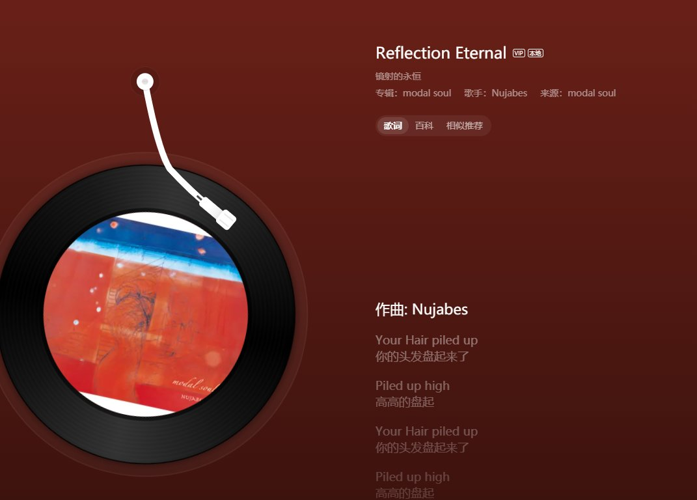

@pr80net @ZakkysLab 必须他娘feelgood不管是等上头还是上劲了还是吐了等下机被条子尿检了逮了都爽得一批
https://t.co/5NukPj9fbx

https://t.co/5NukPj9fbx

永夜安港 每日空投贴
奖品依旧是 @ZakkysLab 的2盒妙妙小礼物
今天天气好热，热到人的情绪也开始燥热，我在听Nujabes的Reflection Eternal，这首歌仿佛有魔力，每次躁动时我就会听这首歌，你们在听什么音乐呢？今天的评论区我想看看你们的歌单分享!!!音乐就要相互分享！扎克依旧会随机抽取幸运观众！ https://t.co/32CXyvxc1l
奖品依旧是 @ZakkysLab 的2盒妙妙小礼物
今天天气好热，热到人的情绪也开始燥热，我在听Nujabes的Reflection Eternal，这首歌仿佛有魔力，每次躁动时我就会听这首歌，你们在听什么音乐呢？今天的评论区我想看看你们的歌单分享!!!音乐就要相互分享！扎克依旧会随机抽取幸运观众！ https://t.co/32CXyvxc1l